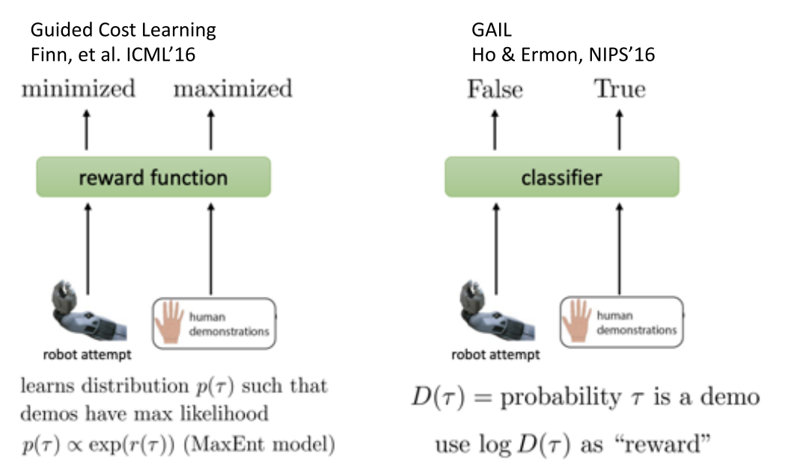
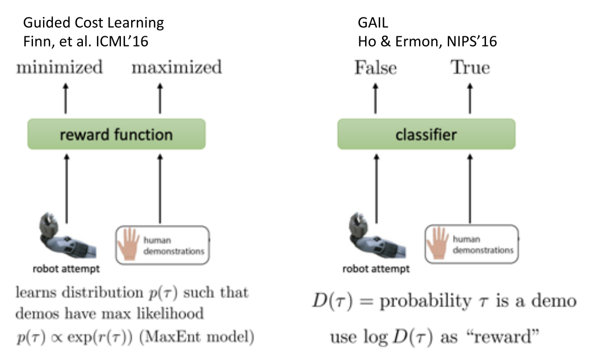
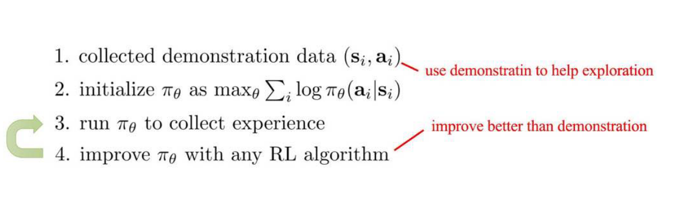
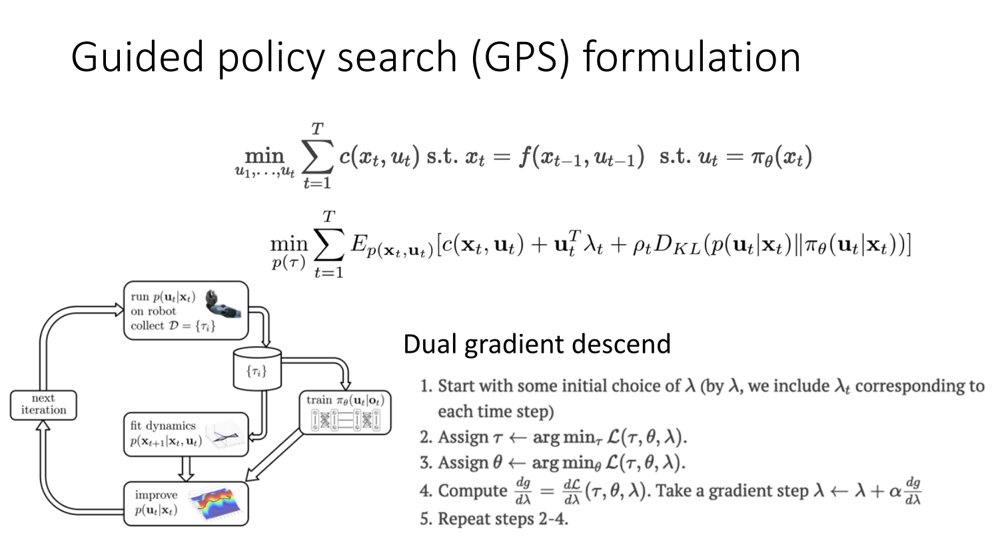
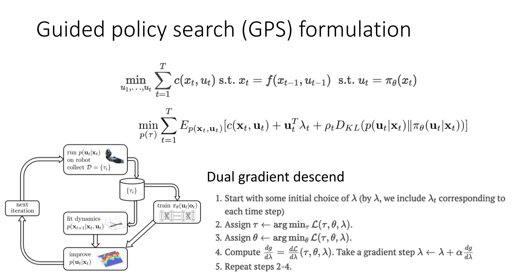
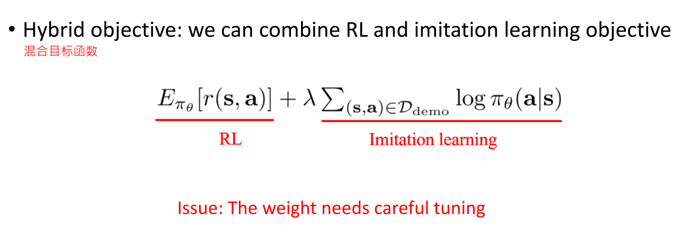
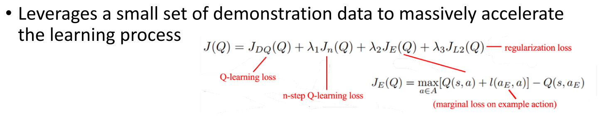
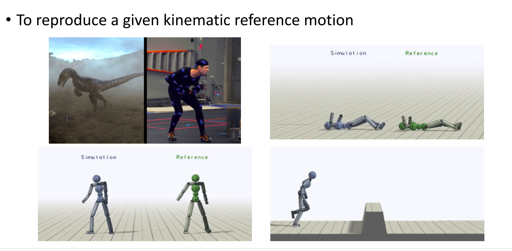

4 周博磊RL-8-IRL
IL
- 训练简单稳定
- 分布偏移问题
- 性能上限不超过示例数据
- 数据获取问题
RL
- 性能上限可以超过人类
- 探索与利用的均衡
- 某些任务无法快速学习有效策略或者代价很高
RL+IL
- 初始化+微调
- 性能可以比初始化的更好
- 无法解决分布偏移, 可能会忘记初始化学会的策略
- 纯RL+示例的off-policy
- 无偏RL
- 示例数据不一定一直有用
- 混合目标函数, 让模仿学习作为辅助loss.
- 性能优势
- 引入新的超参数
- 不再是纯RL, 可能是有偏的
1. 模仿学习
模仿学习不能看作是纯监督学习, 因为还是一个序列决策任务, 之后的状态分布和动作决策相关.
一般都是直接拿人的数据进行训练
但是: 当进入样本没有访问过的状态时, 会出错, 并且错误会累加
1.1 解决1:DAgger: Dataset Aggregation
- 加入更多的数据. 即让训好的模型在环境中运行, 收集出错的状态, 人类再给他指导数据
- 让训练数据的分布与策略产生的数据的分布一致
- 思想: 从策略收集数据, 让人打标签

- 缺点: 第三步需要人类打标签, 成本高
- 改进: 让3步询问其他速度慢但是准确率高的算法.
1.2 模仿学习缺点
- 需要人类提供数据，但通常数量有限
- 人类不擅长提供某些类型的行动
- 人类可以自主学习(非监督学习)
2 Inverse Reinforcement Learning (IRL)
2.1 Guided Cost Learning

2.2 Generative Adversarial Imitation Learning(GAIL)
- paper1 Ho and Ermon, NIPS'16. https://arxiv.org/pdf/1606.03476.pdf
- paper2 Finn, Christiano, et al. A connection between GANs, Inverse RL, and Energy-based Models. https://arxiv.org/pdf/1611.03852.pdf
 

2.3 IRL 改进
改进方向:
- Multimodal behavior:对于一个状态可能有多个解
- 可以使用多峰的混合高斯分布
- Latent variable models 或者 Autoregressive discretization
Non-Markovian behavior
- 建模整个序列, 而不是只看当前状态---使用LSTM网络等

2.4 Learning from demonstration

4 IL与RL结合
- IL
- 需要demonstrations
- 分布偏移问题
- 是监督学习, 训练简单稳定
- 但最好也就和演示一样
- RL
- 需要奖励函数
- 必须进行探索和利用均衡
- 潜在的非收敛性
- 可以超越人类
4.1 简单结合: Pretrain \& Finetune
- 先用人类数据预训练模型,作为参数初始化机制
- 然后使用RL提升策略
- 学习处理偏移问题, 并超越示例数据性能

- 问题:
- 策略采集到的经验数据可能很差, 进而导致性能崩溃

4.2 Solution: Off-policy Reinforcement Learning
- 将demonstrations作为off-policy 数据
- Off-policy policy gradient (with importance sampling)
- Off-policy Q-learning

4.2.1 Guided policy search (GPS)
 

4.2.2 Q-learning with demonstrations
直接将示例数据放到replay-buffer里

4.3 将模仿学习作为复制loss

Hybrid policy gradient

Hybrid Q-Learning

应用--电影中的Motion Imitation
